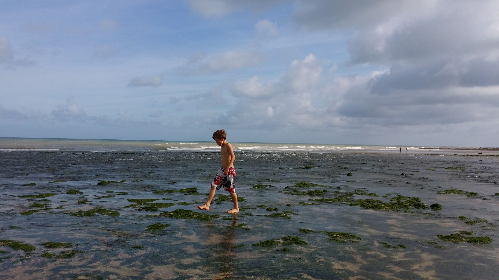

Dieppe!Ik heb van 23 t/m 30 augustus een toernooi in Dieppe gespeeld. Ik deed samen mee met mijn broertjes en zusje ( verslag Lucas, verslag Jorden). We vertrokken richting Frankrijk op 22 augustus, op de verjaardag van Nanne en Machteld. Nanne en Machteld op het strand. Die dag hebben we gelogeerd bij de familie Kien. Dat was heel gezellig. De volgende dag was het nog maar een half uur rijden naar het toernooi. We gingen ons aanmelden en gingen daarna lunchen op een plein in Dieppe. Eerst waren we bij een pizzeria, maar omdat we geen pizza's mochten delen gingen we naar het eettentje ernaast waar we kebab hebben gegeten behalve Tristan want hij is vegatarisch. Daarna begon het toernooi, ik won de eerste ronde heel makkelijk. De rondes begonnen pas om half drie dus gingen we voor de ronde begon altijd iets doen. Alleen Jorden en Lucas gingen nooit mee omdat zij wilden voorbereiden. Op de tweede toernooi dag gingen we naar het kasteel van Dieppe waar heel veel bloemen lagen. Kasteel van Dieppe. De tweede ronde speelde ik remise tegen MONNET Christian met de rating 1621. Het was een slechte partij, ik offerde 2 pionnen voor een paard maar aan het eind gaf ik een belangrijke pion weg waardoor het remise werd. De volgende dag was een dubbele ronde, ik won beide rondes dus het ging best goed. De dag erna zijn we naar het stenen strand bij Pourville geweest. Dat is een plaatsje dat ongeveer 5 km van Dieppe vandaan ligt. De vierde dag hebben we de Arques-la-Bataille bezocht, dat is een oude ruine. We zijn er om heen gewandeld en het was heel erg groot. Arques-la-Bataille. De vijfde dag gingen we naar de haven van Dieppe. In de middag speelde ik remise tegen GUEHTAR Sofiane met de rating 1458. Ik stond eerst een stuk voor maar gaf dat daarna weer terug. De zesde dag gingen we naar een zand strand tien km verder dan Pourville.  Strand. In de middag speelde ik remise tegen ROUSSELIN Marc met de rating van 1637. De zevende ronde won ik van BARZILAY Marianne met de rating 1594. De achtste ronde won ik van CHARGELEGUE Laurent met de rating 1499. De laatste ronde verloor ik van BOITEL Leo met de raing 1643. Aan het eind van het toernooi heb ik 6.5 puten gehaald. En ik heb zestig euro verdiend. |